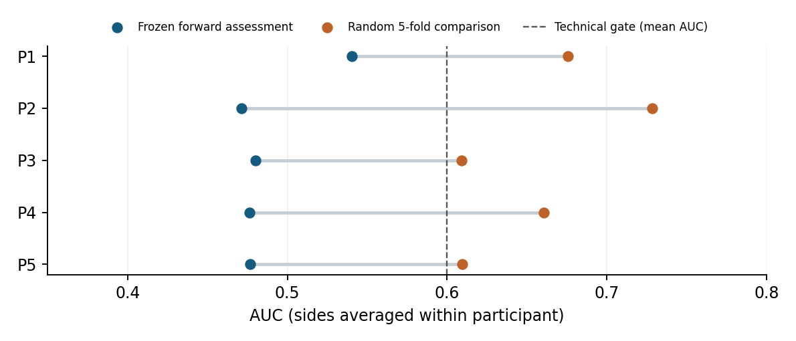

AI AGENT EVALUATION / BIOMEDICAL RESEARCH
Benchmark the reasoning
behind the answer.
I developed biomedical analytics tasks, built reproducible statistical reference solutions, and reviewed paired AI agent responses. The work tests whether an agent makes the right inference from real data—and whether the grading rubric rewards that inference.
From task design to a verified reference.
The project series examined oncology study feasibility, clinical prediction, competing risks, trial planning and longitudinal biomarkers. I combined clinical data engineering, competing-analysis design, numerical verification, structured scoring criteria and response review. Analysis and implementation were developed with AI-assisted coding and checked against independent numerical calculations.
The public deliverable centers on a personalized pain-decoder workflow: nine device-side files, five participants, a clinical handover and later monitoring. It includes an offline Python replay, an explicit candidate specification, aggregate reference evidence, tests, and a versioned rubric proposal.
Same measurements. Different prediction question.
The candidate is personalized before handover, then frozen for monitoring. Its technical screen requires a participant-balanced mean AUC of at least 0.60. A conventional random validation analysis would approve it; an evaluation aligned with that intended use would return it for recalibration.
| Assessment | Mean AUC | Technical decision |
|---|---|---|
| Frozen calibration → later monitoring | 0.4891 | Return for recalibration |
| Shuffled validation across observed history | 0.6566 | Would qualify |
| Random-fold predictions, monitoring cases only | 0.5053 | Does not qualify |

The random comparison performs selection and fitting inside training folds. Its apparent advantage cannot simply be called feature-selection leakage: a control restricted to monitoring cases reveals a substantial phase and validation-population shift. Choosing the right target is part of the statistical task.
Evaluate the agents—and audit the evaluation.
Both reviewed decoder responses recovered the approximately 0.489 monitoring AUC and correctly recommended recalibration. They also recognized bilateral dependence and sparse future pain states. I credited those successful analyses rather than treating different defensible cross-validation summaries as failures.
An earlier platform pair was reported at 48% and 92%, with neither receiving full marks in that reported evaluation. Those are historical reported scores, not independently reproduced grades; the exact prompt/rubric association remains unverified. Decoder-run numerical grades were unavailable.
I also identified an inherited rubric that combined criteria from different tasks. The replacement proposal ties its 12 criteria to one prompt and separates substantive statistical judgment from deliverable checks. The evaluation record documents what was verified and what was only reported.
Many rows do not guarantee strong evidence.
The monitoring panel contains 715 distinct extreme-state surveys, with only three high-pain surveys each for two participants. Time-block resampling can lose a required class and make AUC undefined. The reference explicitly reports those draws instead of silently deleting them and presenting a reassuring interval.
Independent checks reproduce AUC with rank statistics, compare LDA scores against scikit-learn, verify weighted tie handling, and preserve the source archive's checksum. Timing and preprocessing sensitivity checks retain the same technical recommendation.
Skills applied.
AI agent evaluation
Task and benchmark design, stakeholder prompting, paired-response review, failure analysis, scoring rubrics, criterion versioning and evidence tracking.
Experimental reasoning
Estimand definition, deployment-matched evaluation, competing baselines, train-only personalization, temporal shift and selection-bias checks.
Biostatistics
Clinical heterogeneity, competing risks, power and variance uncertainty, hierarchical prediction, cluster-aware resampling, sparse-state support and sensitivity analysis across the project series.
Data engineering
ClinicalTrials.gov API ingestion, identifier and cohort reconciliation, HDF5/CSV processing, longitudinal survey alignment, duplicate and bilateral measurement handling.
Statistical computing
Python, NumPy, pandas, SciPy, scikit-learn, h5py, LDA, ROC AUC, weighted rank statistics, block bootstraps and independent numerical verification.
Reproducible research
Offline command-line analyses, deterministic seeds, source hashes, frozen specifications, reference outputs, tests, dependency isolation and Git version control.
Technical communication
Decision-first clinical memos, evidence tables, Matplotlib visualizations, ReportLab PDF generation, Poppler visual QA and transparent uncertainty statements.
Research governance
Licensing and provenance audits, source attribution, documented metadata cleanup, rubric consistency checks and calibrated performance claims.